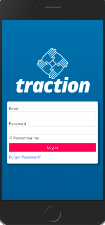
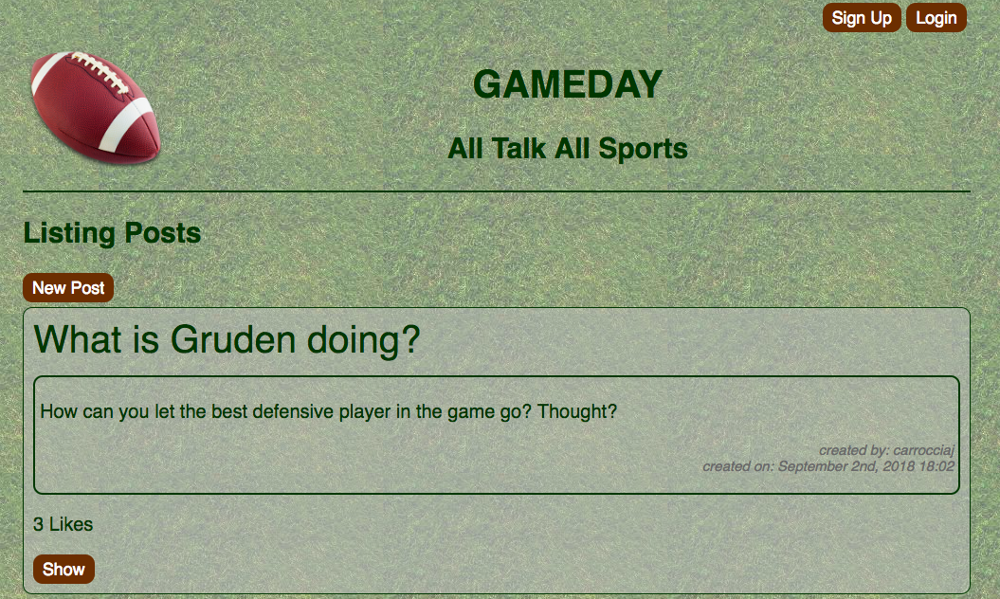
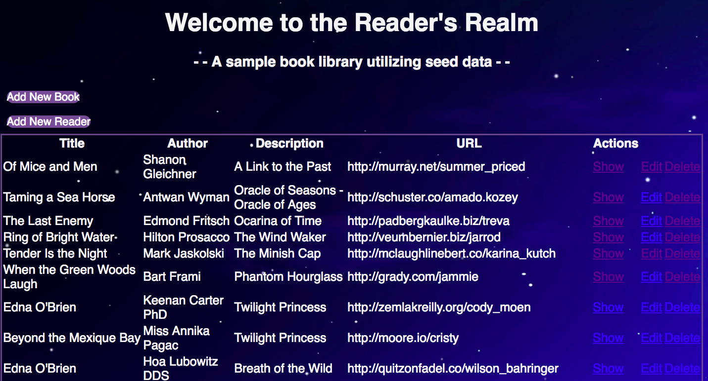
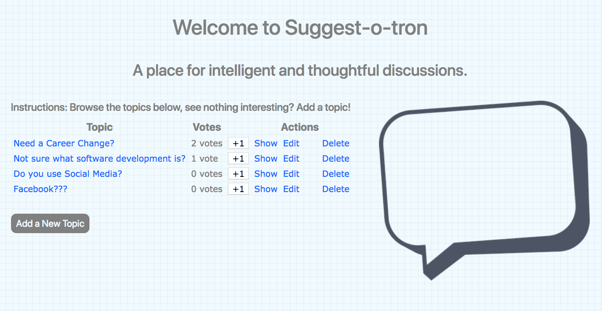
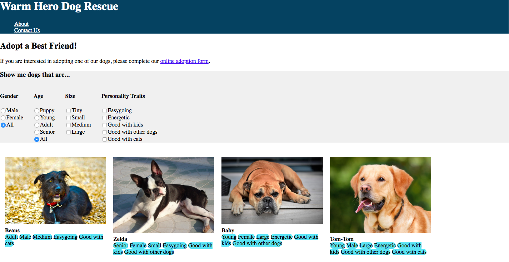
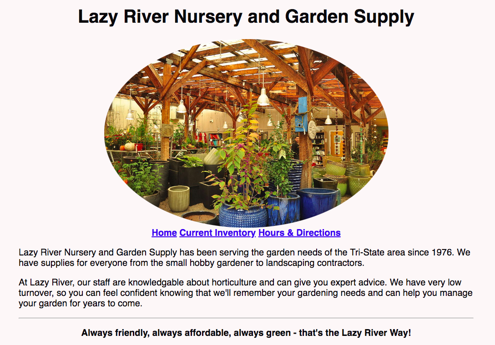

This mobile and desktop app aims to aid the NC Harm Reduction Coalition (NC HRC) and other groups in fighting the statewide opioid crisis. Developed by a team of 5 junior developers in 2.5 weeks as a capstone project presented at Demo Day from Momentum's immersive coding program. It's twofold function will allow NC HRC administrators to organize community volunteers and utilize a QR code scanning technology to track the distribution of Naloxone (Narcan) kits. It vastly improves the current processess by ensuring data accuracy, efficiency, and security in data collection and analysis.
An example of a reddis/twitter-style app, this project was created by a team of 3 junior developers and includes secure signup and login/out functions.
A book library app created individually that allows users (readers) to view a list of all books, add new books, and edit or remove books.
A simple topic voting app created during a one-day RailsBridgeTriangle workshop.
This is an example of a very basic dog adoption website. Created individually it shows the use of basic HTML, CSS, and Flexbox code.
This is an example of a very basic plant nursery website (created individually using HTML and CSS code).
